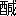

鐵道の進歩は非常の速力を以て
鐵軌を
延長し道路の修繕は縣官の功名心の爲に山を削り谷を
埋む今ま三四年せば卷烟草一本吸ひ盡さぬ間に
蝦夷長崎へも到りヱヘンといふ響きのうちに奈良大和へも遊ぶべし
况んや手近の温泉塲など
樋をかけて東京へ引くは今の
間なるべし昔の人が須磨明石の月も
枴にかけてふり賣にやせんと冷評せしは實地となること日を待たじ故に地方漫遊のまた名所古跡一覽のと云ふ人は少し
出立を我慢して居ながら伊勢の大神宮へ賽錢あぐる便利を待つたが
宜さうなものといふ人もあれど
篁村一種の
癖ありて「容易に得る樂みは其の分量薄し」といふヘチ理屈を付け旅も少しは
草臥て辛い事の有るのが興多しあまり徃來の便を極めぬうち日本中を漫遊し都府を
懸隔だちたる地の風俗を
交ぜ
混ぜにならぬうちに
見聞し
山河も形を改ため勝手の違はぬうち觀て置きて歴史など讀む參考ともしまた
古時旅行のたやすからざりし有樣の一斑をも窺ひ交通の不便はいかほどなりしかを知らんと願ふこと多時なりしが暇。金。
連の
三折合ずそれがため志しばかりで
左のみ長旅はせず繪圖の上へ
涎を垂して日を送りしが今度其の三ツ備はりたればいでや時を失ふべからず先づ木曾名所を探り
西京大坂を
囘り
有馬の温泉より神戸へ出て須磨明石を眺め紀州へ
入りて高野山へ
上り和歌の浦にて一首詠み熊野本宮の湯に
入りてもとの小栗と本復しと拍子にかゝれば
機關の
云立めけど少しは古物類も
覗く爲に奈良へ

りて古寺古社に
詣で
名張越をして伊勢地に
入り大廟にぬかづき二見ヶ浦で日の出を拜み
此所お目とまれば鐵道にて東海道を歸るの豫算なるたけ歩いてといふ注文三十日の日づもりで行くか歸るか分からねど
太華山人。
幸田露伴［＃ルビの「かうだろはん」は底本では「かうだろばん」］。
梅花道人の三人が揃つて行かうといふを幸ひ四人男
出立を定め
維時明治廿三年四月の廿六日に本願の幾分を果すはじめの日と先づ木曾街道を西京さして上る間の記を平つたく木曾道中記とはなづけぬこれは此行四人とも別々に紀行を書き幸田露伴子は獨得の健筆を大阪朝日新聞社へ
出して「
乘興記」と名づけ梅花道人は「をかしき」といふを讀賣新聞へ掲げ太華山人は「四月の櫻」と題して沿道の風土人情を
細に觀察して東京公論へ載するにつきまぎれぬ爲にしたるなり此の旅行の相談まとまるやあたかも娘の子が芝居見物の前の晩の如く何事も手につかず
假初にも三十日のことなればやりかけたる博覽會の評も歸つてからまた見直すとした處で四五日分は書き溜てザツト片を付けねばならず
彼是の取まぎれに
何處へも
暇乞ひには出ず廿五日出社の戻りに
須藤南翠氏に出會ぬ
偖羨やましき事よ我も來年は京阪漫遊と思ひ立ぬせめても
心床しに
汝の行を送らん
特に木曾とありては玉味噌と
蕎麥のみならん京味を忘れぬ爲め通り三丁目の嶋村にて汲まんと
和田鷹城子と共に勸められ南翠氏が
濱路もどきに
馬琴そつくりの送りの
詞に久しく飮まぬ
醉を盡し歸りがけに
幸堂氏にまた止められ泥の如くなりて家に戻り
明日は朝の五時に總勢
此に會合すれば其の用意せよと云ふだけが確にて夢は早くも名所繪圖の
中に
跳り入ぬ
博覽會開設につき地方の人士雲の如くに東京に
簇集きたる
之に就て或人説をなして米價騰貴の原因として其の
日々費す所の
石數を擧げたるがよし
夫までにあらずとも地方は輕く東京は重き不平均は生じたるならん我々四人反對に東京より地方へ出て釣合をよくせんと四月廿六日の朝上野の山を横ぎりて六時發横川行の

車に乘らんと急ぎしに
冗口といふ魔がさして
停車塲へ着く此時おそく
彼時迅く
笛一聲上野の森に
烟を殘して
車はつれなく
出にけり
此が風流だ此の失策が妙だと
自ら慰むるは朝寐せし一人にて風流ごかしに
和められ
車に乘おくれるが何が風流ぞと怒つたところで
可笑くもなければ我も苦笑ひして
此方を見れば
雜踏の中を飄然として行く後ろつき
菊五郎に似たる
通仕立の
翁あり誰ぞと見れば
幸堂得知氏なり
偖は我々の行を送らんとして
此に來て逢はぬに
本意なく歸るならん送る人を却つて我々が送るも新しからずやと
詞はかけず
後について幸堂氏の家まで到り
此に新たに送別會を開きぬ我三人に
萬の失策皆な酒より生ず旅中は
特につゝしむべしと一句を示す
一徳利あとは蛙の聲に寐よ
また新らしく
瀧澤鎭彦幸堂得知の兩氏に送られ九時の
車に乘り横川までは何事もなく午後一時三十分に着せしが是からが英雄
競此碓氷嶺が歩く邪魔にならば小脇に抱へて
何處ぞ空地へ置てやらうと下駄揃にて歩み
出せしが始めのうちこそ小石を蹴散し
洒落散したれ
坂下驛を過るころより我輩はしばらく
措て
同行三人の鼻の穴次第に擴がり
吐く息
角立ち洒落も
追々苦しくなり
最うどの位來たらうとの
弱音梅花道人序開きをなしぬ横川に
車を
下りて
直に碓氷の馬車鐵道に乘れば一人前四十錢にて五時頃までには輕井澤へ着きまた直ちに信越の鐵道に乘れば追分より先の
宿小田井（
停車塲は
御代田といふ）まで行くべきなれど
其處が四天王とも
云るゝ豪傑鐵道馬車より歩いて早く着いて見せんとしかも舊道の峠を
上りかけしが梅花道人
兎角に行なづむ樣子に力餅の茶店に風を入れ
此にて下駄を捨てゝ道人と露伴子は
草鞋となりしが我と太華山人は此の下駄は我々の
池月摺墨なり木曾の山々を踏み
凹ませて京三條の大橋を
踏轟かせて見せんものと二人を見て麓より吹上る風より冷かに笑ひつゝ先んじて
上る上りて頂上に近くなれば氣候は
大に東京とは變りて山風
寒し木の間がくれに山櫻の咲出たる
千蔭翁が歌の「夏山のしげみがおくのしづけさに心の散らぬ花もありけり」とあるも思ひ出られて嬉しく
頻りに景色を褒め行くうち山人汗を
雫と流して
大草臥となれば露伴子は
此ぞと旅通を顯して飛ぶが如くに
上る
此に至つて不思議にも始め弱りし梅花道人ムク／＼と強くなり山も震ふばかり力聲を
出しサア僕が君の荷を持たうしつかりして
上り玉へと矢庭に山人の荷物と自分の荷を合せて引かつぎエイ／＼聲に上りしは目ざましきまで感心なり拙者は
中弱りの氣味にて少し足は重けれど初日に江戸ツ子が
泣を入れたりと云れんは殘念なればはづむ鼻息を念じこらへてナニサ
左樣でもないのサと平氣をつくろひ輕井澤に
下りて鶴屋といふに着き風呂の先陣へ名乘て勇ましく風呂へ行きしが直ちには
跨ぎて湯に
入れず少しく顏をしはめたり
風流は
寒いものとは
三馬が下せし定義なり山一つ越えて輕井澤となれば國も
上野が
信濃となり管轄縣廳も群馬が長野と變るだけありて
寒さは十度も強しといふ前は碓氷
後は淺間の
底冷に峠で流せし汗冷たく身輕を
旨の
旅出立わな／＼震ふばかりなり宿の
女子心得て二階座敷の
居爐裡に火を澤山入れながら夏の凉しき事を誇る蚊が
出ぬとて西洋人が避暑に來るとて
夫れが今の
寒さを凌ぐ
足にはならず早く酒を持ち來たれ。
畏まりぬと答へばかりよくして
中々持ち來らず
飢もし
渇もしたるなり先づ
冷にてよし酒だけをと頼めど持來らず徳利などに入るゝに及ばず有合す
碗石五器にも汲み來れと
急きてもいつかな持ち來らず四人爐を圍みて只風雅の骨髓に徹するを歎ずるのみ夜風いよ／＼冷かなりトばかり有りて
頓て膳部を繰り
出し來りぬ續いて目方八百五十目といふ老鷄しかも
雄にて齒に乘らざる豪傑鍋も現はれぬ是等の支度をせんには二時三時間經ちしも無理ならず斯く膳部取揃はぬに酒を
出すは禮法に背くものと心得たる朴實これまた風雅の骨なり
兎も
角も有合せもので先づ
御酒をと云ふは江戸臭くして却つて興味なし諸事旅は此事よと稱して箸を
下すに味ひ
頗ぶる佳し
勞れを忘れて汲みかはせしが初日ゆゑか人々身体に異常をおぼえて
一徳利と
極めし數にも足らで盃を收めたり
夜具も清くして取扱ひ丁寧なり
寐衣とて
袷を
出したれど我はフラネルの
單衣あればこれにて寐んと一枚を戻せしにいかに
惡くは聞取りけん此袷
汚しと退けしと思ひ忽ち持ち行きて換へ來りしを見れば今仕立しと見ゆる
八丈絹の小袖なり返せしは左る心にてはなし是が寐心よければ別に
寐衣に及ばずと云しなりと詫てまた戻せしが是にても客を大切と思ふ志しは知られたり然らば
寐らんと蒲團に
潛り今日道々の景色に
行く春を追ふて木曾路の櫻かな
など考ふるに眼はさえて今宵は
草臥に紀行も書ざりしが
明日の泊りは早くして必らず二日分
認むべし四人別々に書く紀行拙者も貴公も同案にては
可笑からずハテ
甘く書きたいもの何ぞ名案名趣向名句もせめて一二句は
彼も
斯して是もまたカウ／＼グウ／＼
鼾の音
偖よく人は
睡らるゝよ障子を洩りて
領に
入る淺間の山の雪おろし弓なりに寐るつる屋の二階是等も何ぞの取合せと思ふ折しも
下屋賑はしく
馬士人足の
醉ひたるならん
祭文やら義太夫やら分らぬものを
濁聲上げ其の合の手には飮ませじと云ふ酒を今ま一合注げ二合温めよと怒りつ狂ひつどしめくなり
醉ての上の有樣は彼も此もかはりはなし耻べきかな
醉狂愼むべきかな暴飮
泥まみれこれが櫻の葩か
降りつゞく雨
明日の空までの事を思へば水の流れもまた雨と枕に傳へて詫し夜はおそく明けぬ今日は輕井澤より越後直江津まで通る信越鐵道とかいふ鐵道に乘り追分驛の先
小田井といふまで至らんと朝立出れば此ほとりは淺間の麓の
廣野にて停車塲まで行く間灰の如き土にて草も短かし
四方の山々に
雉子鶯の聲野には
雲雀の
所得顏なる耳も目も榮耀を極めぬしかし芭蕉翁に「雲雀啼く中の拍子や雉子の聲」と先に出られたれば一句もなし
朝靄山の腰をめぐりて高くあがらず淺間が嶽に殘る雪
旭の光にきらめきたり
車の走るに兩側を眺むる目いそがはし丘を堀割し跡にわずかに
生出し
躑躅岩にしがみ付て花二つ三つ
削落せし如き
巖の上に小松四五本
立り其下に流るゝ水雪の解けて
落るにや流早く石に
礙られてまた元の雪と散るを面白しと云もきらぬうち雜木茂る林に
入る林を
出ればまた
曠野にて
燒石昔し噴出せしまゝなり開墾せんにも二三尺までは灰の如き土にて何も作りがたしとぞ
此所は輕井澤より
沓掛追分小田井の三宿の間なり四里程なれば忽ち小田井に着きて
車を下りしが下りてグルリと
つて見ると方角さらに分らずいづれが
行先歸る道と評議する顏を見て通りかゝりし學校教員らしき人
御代田へは斯う參られよと
深切なり御代田とは小田井が改名せしなり一禮して其の如くに行く此ほとりの林の中に櫻咲き野にはシドメの色を飾り畑道は
菫蒲公英田には
蓮花艸紅きものを敷きつめたるやうなり
足元を花に氣遣へば揚雲雀
宿は永くまばらに續きたり
此を過て
岩村田までまだ
四方の山遠く氣も廣々と田地開けたり岩村田よりやゝ山近くなり坂道もあり
此にていづれも足取重げなれば車を雇はんとせしが其の相談のうちに宿を出はなれたり梅花道人いかにしてか
後れて到らず
偖こそ弱りて跡へ殘りしならん足は長けれど役には
立ず長足道
怖し馬乘らぬとは此事だと無理を云ふうちオイ／＼諸君の荷物を
此方へ出したり宜しい諸事僕が心得た先の
宿で待つよと跡より驅來りて梅花道人手輕く三人の荷を取りて一まとめにするゆゑ是はいかにと怪しむ跡より
鹽灘への歸り車とて一挺
來るこれ道人が一行に一足
後れて
密に一里半の丁塲をわずか六錢に
掛合此の拔掛は企てしなり
昨日碓氷の働きと云ひ今ま此の素早さに三人の旅通
先を取られて後生畏るべしと舌を吐くうち下り方のよき道なれば失敬と振り
す帽子は忽ち森の陰となりぬ畜生
侮ツて一番やられたよし左らば車が早きか我々の
脛が達者か競爭を試みんと口には云しが汗のみ流れて足は重し平塚村といふに小高き森ありてよき松の樹多し四方晴れて風
冷しきに此の丘に
上れば雌松雄松が
一になりし
相生あり珍しき事かなと馬を曳きて通る男に聞けば
女夫松とて名高きものなりといふ丘の上に
便々館湖鯉鮒の狂詠を彫りし碑あり
業平も
如何したとかいふヘボ歌ゆゑ記臆をすべり落ぬ
辷る赤土に下駄を腰の臺としてしばらく景色を眺め此丘一つ我物ならば
此に讀書の
室を築き
松風蘿月を
侶として澄し込んものと又しても出來ぬ相談を始め勝地に到れば住んことを望み佳景にあへば一句してやらんと思ふ此等みな酒屋の前に
涎を垂し鰻屋の臭に指を
啣へる
類なり慾で滿ちたる人間とて何につけても
夫が出るには愛想が盡る人生
居止を營む
竟に
何人の爲に
卜するぞや
眺望があつて清潔な所を拙者が
家だと思へば
宜いハテ百年住み遂げる人は無いわサト痩我慢の悟りを開き
此所の新築見合せとし田へ引く流に口を
漱ぎ
冗語を
勞れの忘れ草
笑聲を
伽の野は長く駒の
形付たる石ありといふ
駒形明神の坂も過ぎ
鹽灘へこそ着にけれ
鹽灘にて早けれど
晝餉したゝむ空暗く雲重ければいさゝか雨を氣遣ふ虚に付け入り車に乘れと勸む
八幡の先に
瓜生峠とてあり其麓までと極めて四挺の車を走らす此邊の車には
眞棒に
金輪をつけ走るとき鳴り響きて人を
避けさするやうにして有り四挺の車に
八の金輪リン／＼カチヤ／＼
硝子屋が夕立に急ぐやうなり鹽灘の
宿を出はづれの阪道に瀧あり明神の
杜心地も
清しく茂りたり瀧の流に
水車を仕掛
流の末には
杜若など咲き
躑躅盛りなりわづかの處なれど風景よし
笠翁の詩に山民
習得て一身
慵し
間に
茅龕に臥し
倦て松に
倚る
却て
辛勤を
把て
澗水に
貽る曉夜を分たず人に代つて
舂くとあるも此等のおもかげかしばしと立寄りたれど車なれば
用捨なく駈け
下る下れば即ち
筑摩川にて水淺けれど勇ましく清く流れて川巾は隅田川ほどあり船橋掛る
半渡りて四方を見れば山々雨を含みて雲暗く水の響き凄じ
斯る折名乘りも
出よ
時鳥
驀地馬乘り入れん夏の川
筑摩川春ゆく水はすみにけり消て
幾日の峯の白雪とは
順徳院の
御製とか
大なる石の上にて女
衣を
濯ふ波に捲き
取れずやと
氣遣る向の岸の
方に此川へ流れ入る流に
水車を仕掛あり其下はよどみて水深げに青みたるに
鵞鳥の四五羽遊ぶさながら繪なり八幡を過ぎ
金山阪下にて車は止る
瓜生峠を越ゆるに
四歳ばかりの
女子父に手を引かれて峠を下る身はならはしの者なるかな
角摩川といふを渡りて
望月の
宿に
入るよき
家並にていづれも金持らし
此は望月の駒と歌にも詠まるゝ牧の有し所にて
宿の名も今は
本牧と記しあり。
宿を通して
市の中に清き流れありてこれを
飮用にも洗ひ物にも使ふごとし
水切にて五六丁も遠き井戸に
汲に出る者これを見ばいかに羨しからん是より
雁とり峠といふを越ゆ峠らしくなく
眺望よき阪なりいばら阪といふとか道々清き流を手に
掬びては
咽喉を
濕す人々戯れて休まんとする時には「ドウダ一杯やらうか」といふ此の一杯やらうが一丁ごとぐらゐになると餘程
勞れたるなり
蘆田の
宿より先に未だ峠あり
石荒阪といふ名の如く石荒の急阪にて今までのうち第一等の難所なり阪の上へ到れば平なる所半丁ほどありて草がくれの水手に
掬ぶほども流れず
下りて一丁ほど行けば此の水山の
滴りを合せて小流れとなる下るまた一二丁流は石に觸れて音あり又下る三四丁流れは岩に激して雪を散らす下ること又四五丁川となりて水聲
雷の如し坂を下り終れば川巾廣く穩かに流れて左右の岸には山吹咲き亂れ鳥うたひ魚躍るはじめは道端のヒヨロ／＼流れ末は四面の田地に
灌ぐ河となる岩間洩る滴りも
合する時は斯の如し小善とて嫌ふなかれ積めば則ち大善人小惡とて
許なかれ積めば即ち大惡人富は屋を
潤し徳は身を潤す富は少しき
費を省き少しき利を集めたるなり集りて富となれば屋を潤すばかりでなく人を潤し業を興す流れの及ぶところ皆な潤す徳は少しの善行を重ねたるなり
其功徳身を潤すに止まらず人をして
知ず／＼の間に
善に導き逢ふ所觸るゝところ皆な徳に
潤はざるなし學問もまた斯の如し
今日一事を知り
明日また一事を知る集りて大知識大學者とはなるなり現に今ま此の水を見る
自ら省みて感深し草を
藉いてしばらく川に對す
石荒坂を過ぎ曲折して平地に
出れば即ち
長久保なり
宿の
家並よく車多し石荒坂にて下駄黨も草鞋派も閉口したれば
此より車に乘る此邊平地とは云へ三方山にて圍ひ一方は和田峠に向ツて進むなれば岩大石ゴロタ石或ひは上り或は下る坂とまでならねど
凸凹多く乘る者は難儀なれど
挽夫は躍るもガタツクも物とはせず風の如くに飛び行けば心づもりより時は早く午後三時半和田へ着し緑川といへる高大なる寒げなる家へ泊りたり和田峠は中仙道第一の高山また絶所難塲なりと聞けば窓押し開けて雲深き
方をグツト睨み置き
偖風呂に
入りて銘々
一閑張の机を借り受け
駄洒中止紀行に取りかゝる宿の人
此体を見て不審がる二時間ほどにして露伴子
先づ筆を收めたれば
酒肴見立掛り膳部申付役となる火の
熾んなる
圍爐裏に足踏伸し鉛筆の
後にて
寶丹と烟草の
吹
をソクイに練り交ぜながら
下物は有るやと問ふ宿の女なしと淡泊無味に答ふデモ此邊の川で取れる
岩魚か何かあらうと押し返せば一遍聞合せて見ませうと立つ我々紀行並びに手紙等を書終り
偖いかに酒は來りしや
大膳太夫殿と云へば露伴子ヂレ込み
先刻聞合せると云たばかりに沙汰なしとは
酷い奴だと烈しく手を叩けば
緩やかに
出來る
肴はといきまけばまだ
聞に行た者が歸りませんと落付たり露伴
堪へず
其は
何處まで聞にやりしぞ一時間も掛るにまだ戻らぬかと
詞を荒くすれば
川へ聞きにやりましたまだ戻りませんと答ふ我輩不思議に思ひ傍らより口を
出し川へ聞にやるとは如何なる事ぢやと問へば川へ魚を捕りに
出し者あるべければ河原へ行き其の漁者について魚は有るや否やを問ふにて魚屋とて別にそれを貯へて賣る處はなしとの事に一同アツト顏を見合し暮て河原に漁者を尋ね尋ね
當て魚の有りや無しやを問ひそれを我等に報じて
而して後に調理にかゝられては一日二日の滯留にては味ふこと
難かるべし肴の儀は取消しとすべし急ぎ膳をと頼めば
頓て持ち
來る膳部の外に
摺芋に
鷄卵を掛けたるを
下物として酒を持ち來り是は
明日峠を
目出度越え玉はんことを
祝ぎたてまつるなり味なしとて許されて志しばかりを汲ませ玉へやといふ先に家の
大なるに合せ奮發したる茶代の高
此に至ツて光を放ちぬ
併しながら此家は
夫是の事に拘はらず山を祝ふて酒を
勸むるが例なりと質朴にしてまた禮ありと
稱へ皆な快く汲む終りて梅花道人は足の
勞れ甚だしければ
按摩を取らんとて
呼いろ／＼
弄りて果は露伴子も揉ませながら
按摩に年を探らするも
可笑しく我はこれを聞つゝ先に枕に就く
雨を呼ぶ蛙よ明日は和田峠
降らぬやうに祈るぞと云しが
山下しの風の音雨と聞なされて
覺ること
度々なり果して夜半に雨來る
彼方に寐がへり
此方に寐がへり
明日此に滯留とならば我先づ河原へ出て漁者を尋ねんなど思ひ續くるうち夜は明けしが嬉しや雨も止みぬ馬二
頭曳き來り
二方荒神といふものに二人づゝ乘すといふ繪に見話には聞しが自ら乘るは珍しく勇み乘りて立ち
出れば雨の名殘の樹々の露
領に冷たく
宿を離るれば
直に山にて
溪の流れも
水嵩まして音高く
昨夜の雲はまだ山と別れず朝嵐身にこたへて
寒し
身輕手輕と
夫ばかりを
專にしたる
旅出立なれば二方荒神の中に
縮まりてまだ雨を持つ雲の中に
上る太華山人其の
寒さを察し
袷羽織を貸さる我が羽織の上へ重ね
被ても大きければ向ふ山風に吹き孕みて
恰かも
母衣の如し
後の馬の露伴梅花の兩子いろ／＼に
見立て
嘲み笑ふ
此は信濃の
山中なり
見惡しとて
寒さにかへられんや左云ふ君等の顏の色を見よと
詞戰かひ洒落も凍りて
可笑しきは出ず峯には櫻
溪には山吹
唐松の
芽出の緑鶯のをり／＼ほのめかすなど取あつめたる景色旅の嬉しさ是なりと語りかはして
山響き谷こたへて後しづかなり雉子の聲
と無理を吐く
羊膓たる
阪路進むが如くまた
退るが如し馬をしばしと止めて元
來し方を顧みれば淺間の山はすでに下に見られて其身は白雲の上にあり
昨日此山を見て一睨みして置きしが今日は昨日宿りし處を見んとして見えず何となく氣
壯んになりて身に膓胃ある事を忘れたり
此山路秋は左こそと青葉を
紅に默想し雪はいかにと又萬山を枯し盡して忽ち
突兀天際に聳ゆる
銀の山を瞑思すつひに身ある事を忘れたり澤を傳ひ峯に上る隨分
峻しき峠なれど馬にまかせて
嶮しき事を知らず東もち屋村といふは峠の上にして人家四五軒あり名物の
餡餅あり
此にて馬を
下り
圍爐裏の火に
龜みし手足を温めながら其名物を試む梅花道人
物喰に於て豪傑の稱あり
此にてもまた人々に推尊せられて
二盆の外
我分までを
啖ひ盡すやがて此を出で是より下りなればとて例の鐵脚を踏み轟かす道人
餡餅腹に
入りて
重量を増したるにや兎角に
後に
下る露伴子は昨年此道中をせしとて甚だ通なり
甞て
出立の時に曰く木曾海道美人に乏し和田峠西もちや村の餅屋に一人また
洗馬に一人あり洗馬のは
予未だ其比を見ざる眞に絶世の美人なり餅屋のはこれに
亞ぐと物覺え惡き一行なれど是は皆々
領裏にでも書留て置きしやよく覺えて
夫となく
此より荷物を包み直し
領掻き合せ
蝙蝠傘に薄日を
厭ふ峠の上の
平坦なるを過ぎて
下り口に至りて西の
方を一望すれば眼界新たに
曠て
昨日までの景色と異なり群山皆な雌伏此の峠の
外に山と仰ぐべきなし何か自分が此山になつたやうな氣持にて傲然としてまた一睨みす下りは元は急にて上りより難儀なりしを御巡幸の節道を直し今は行人安樂なりといふ左れど尚ほ屈曲の
險坂幾段なるや知らず
古しへの險阻おもふべきなり下り終らんとする所即ち西もちや村なり
此は人家十餘軒ありて宿屋の前に女ども
出てお休みな／＼と客を呼ぶスハヤ
尤物は
此中に在るぞと三人鵜の目鷹の目見つけなば
其所に
入らんとする樣子なり我は元より冷然として先に進み道のかたへの
菫蕗の
薹蒲公英茅花など
此に
殘の春あるを賞して騷しき
方は見もかへらず三人跡より
喘ぎ來りて無し／＼影もなし大かたは此邊の貴家豪族が選び取て東京紳士の眞似をなし
贋雪舟と共に床の間にあがめ置くなるべし憎むべし／＼といふ
呼子鳥おぼつかないで尚床し
日も温かに鳥の聲も麗かなりぶらり／＼と語りながら行くに足は
勞れたり
諏訪の湖水はまだ見えずや晝も近きにと
云うち
下の諏訪と記したる所に
出たり
旅宿もあり
此ならんと思へばこれは出村にてまだ一里といふ
旅にて聞くを
厭ふ
詞二つ
まだと
餘なり初日
碓氷にて
勞れしとき舊道へ
入るの道の
標を見るに輕井澤まで二里
餘とあり
喘ぎ／＼
上りてやがて二里餘も來らんと思ふに輕井澤は見えず
孤屋の
婆に聞けば是からまだ二里なりといふ一行
落膽し
偖は是程に
草臥て
餘だけしか來らざりしかと泣かぬばかりに驚きたり是より道を問ひて餘の字を付加へらるゝ時はスハヤと足を
擦りたり又まだと
云は
頓て
其處ならんと思ふて問ふとき付加へられて力を落す詞なり和田峠の
上りは馬に乘りたれば
野々宮高砂なりしが
下りは
侮りて遊び／＼歩きたる爲め三里に足らぬと聞くに
捗取らぬこと不思議なるうへ
下口はドカ／＼と力も足に
入る故か空腹甚しく
餡餅二盆半の豪傑すら何ぞやらかす物はないかと四方を見
す程なれば我は餘ほど北山やら西山やら知らぬ方角の山吹
躑躅見るも目のまはる程となりしに曲り下りる坂下に
町家ありし事なればしかも下諏訪とありし事なれば嬉しや
此ぞと先へ驅けしが心あての龜屋なし立どまりて露伴子に聞けば何でも
此を越して
夫から諏訪の湖水が見えて夫から下諏訪だ此は云て見ればお
前立といふやうなものとの答へ
まだ付の一里是からの長きこと限りなく山吹を折りて帽子に

したり
蓮華草を摘んだり道草は喰へど腹は
脹れず何やら是だけが餘計の道のやうに思はれて小腹も立てば
飛ぶ蝴蝶羽をかはして我を乘せよ
とダヽを
捏ねるイヨ
藤浪由縁之助と聲をかけらるゝにまた取敢ず
術なさに倒るゝまでも菫かな
と狂句すればイヨ
忍月居士と
云此に始めて忍月居士が愛慕さるゝは
菫御前なることを知り又通人を褒めてイヨすみれは置かれませんと挨拶するは此事より起りたる
詞ならんと悟りぬ
兎角いふうち
入まじへたる山の盡るほとりに一面の名鏡現れたり此ぞ諏訪の湖なると露伴子の指すに
俄に足も
輕く氣も勇み始めて心づきて四方を眺望するに山々には殘りの花あり
雲雀鶯の聲は野に滿ち下は湖水へ注ぐ大河ありて岩波高きに山吹危うげに咲き
溢れたる此景色今まで何とて目には
入らざりしといぶかる
頓て
下の諏訪秋の宮に詣づ神さびたるよき
御社なり
上の諏訪に春の宮あり莊嚴目をおどろかすと聞しが
夫へは詣でず
此宿より上の諏訪はまだ三里もありと
聞ばなり
正午少し過るころ下諏訪の温泉宿龜屋に着く一浴して快と賞し鯉
鯰などにて小酌しながら
偖も今日半日の
勞れの恐しさよ小敵と見て侮りたる故
此敗は取りしならん是よりは愼みて一里の道も百里を行くの勇氣を以てあたるべしと語るうち
下座敷に
月琴の響き聞ゆ怪しの物の
音や東京を
出て未だ鳥の謠ひ奏づる
外人間の音樂は聞ずさすがに此は遊浴
繁花の地とて優しくも聞くものかな且つ
其調も拙なからず
微めて唄ふに聲はさだかならねど人

もさぞと慕はしきにいざや
此へ呼びて一曲を所望せん
彼の
潯陽の
江頭ならで諏訪湖邊に月琴を聽くもまた面白からずやと直ちに手を鳴らして女を呼び下にて月琴を
彈くは何者ぞと問へば此家の娘なりといふ
容貌も温泉に
濯ひて清げならん年は
幾許ぞ。ハイ
九歳でまだネカラ手が
りません。此答へに一座唖然たり
二方荒神の味を覺えて
鹽尻峠も馬に遊ばんと頼み置きて寐に就く温泉にて
勞れを忘れ心よく
睡りたれば夜の明けたるも知らず宿の者に催されて
漸やくに眼を
擦りながら
浴室に至れば門前に待ち詫びたる馬の高く
嘶くにいよ／＼慌て
朝餉の膳に向へば
昨日鯉の
濃汁を褒めたればとて鍋ごと盛んに持ち出で勢ひに呑まれてか豪食の三傑
詞にも似ず椀の數少なし馬は何時頃より來り待つぞと問へば江戸のお客樣は氣短でお
出でなさるゆゑマダ來ぬかと叱られぬ爲め夜明前より門に來て居りました私共も四時から御膳の支度して御手の鳴るを待ちましたと云ふ諸事
左樣來て貰ひたしさすがは下諏訪の龜屋なりと
稱へ
土産にとて贈られたる名物
氷餅を旅荷物の
中へ入れて
馬ち
遠であツたと
馬士にも挨拶して
此を立ち出づ
宿の朝景色
何處も勇ましく甲斐々々しく
清々しきものなるが分きて
此宿は馬で心よく搖られ行く爲か面白し
宿を離るれば諏訪の湖水朝霧立こめて空も雨を
催ひて
寒し
馬士の道々語りて云ふ此宿も今は
旅人を當にもなさず先づ養蠶一方なり田を作るも割に合はぬゆゑ皆な
斯樣に潰して畑となし豆を作るか桑を
殖るかなり元は隨分繁昌な所で有りましたがナア又曰く此の流れはアレ
彼山の間を川に流れて天龍川に落ちますナニお前さん氷は張りますが馬は危ないので通行は致しません人は見當をつけて向ふの村へ
何處でも行きます廣さは十三里と云ますが
左樣はございません狐が渡るといふのも昔の話でハイ鯉や
鮒鰻は大層捕れますダガ十月から彼岸時分まで氷で漁は出來ませんナニサ兎は少し取れますが
獸は
何處も
此處も開けたので一疋も居なくなりましたハイ遊廓なんテ見られたもんでは無いと
矢鱈と謙遜なりポクリ／＼と鹽尻峠を上りながら晴た日だと是から富士が見えますと指さす顧みれば水面わずかに白く四方は朝霧にて山の形さへ定かならず此の鏡へ姿を寫す富士の
俤さぞと胸に畫けば煙霧糢糊たる間一種の風景あり
馬士また云ふ
昨夜私の方で大喧嘩が有りました湯の中で騷いだので大きに迷惑します一体湯を引いて湯塲を作るのは大分の入費で
夫は村から出し合て誰でも
無代で
入れますのだが此頃新道を作る人足が大勢
入り込んで
宜い湯治塲へ行た氣で
無代で湯へ
入り其上威張散して喧嘩を仕かけたので村の者は怖しがり女や年寄は
最う
入らぬ位ですナント馬鹿々々しいではございませんか
昨夜の喧嘩も土方同士でイヤハヤ新道一件ではいろ／＼な事がございます
如何か人足の暴れるだけもせめて取締ツて貰ひたい金を出した湯の持主が隅へ小さくなツて
何處の者か知れぬ奴が
無代で巾を利かせて歌など唄ツて騷ぐとはエライ話しだと不平を云ふ一体に新道には不平と見え馬も舊道
行人も舊道なり只運送馬車のみ道は遠けれど
平坦ゆゑ新道を驅けるとぞ此邊の屋作り皆な玄關搆へにて
嚴めしく男も
雪見袴とかいふものを
着て古風なり松本
道の追分あり
此より十五六里なりと午前九時鹽尻の
宿へ着く
乘り捨し馬を繋ぐや散る李花
此邊にては人の妻を呼びてお
方と云ふ女働らき男樂する
風なり土地は
桔梗が
原に續いて田畑多し
鹽尻の
茶店の爐に暖まり
温飩掻込みながら是よりなら井まで馬車一輛雇ふ掛合を始む
直段忽ち出來たれど馬車を引來らず遲し／＼と
度々の催促に馬車屋にては
頓てコチ／＼と
破れ馬車を
繕ひ始めたりイヤハヤ客を見て釘を打つ危ない馬車に乘らるべきか
外に馬車なくば破談にすべしと云へばナニお客樣途中で
破れるやうな事はございません
破れても上の屋根だけですから
轉がり落る程の事は有ませんサアお乘りなさいと二十三四の
馬丁平氣なれば餘義なくこれに乘る二十三四の
小慧き
奴客を客とも思はばこそ遊び半分にラツパを吹きて先を驅くガタ／＼ゴロ／＼隨分と烈し鹽尻を過れば一望の原野開墾
年々にとゞきて田畑多しこれ古戰塲
桔梗ヶ
原雨持つ空暗く風
慘し六十三塚など小さき丘に殘れり當年の矢叫び
鬨の聲
必竟何の爲ぞ
田鼠や化りおほせても草隱れ
興敗つひに
夕鶉の
一悲鳴草の葉に露置くを見れば小雨の降り來りしなり馬車を驅ること飛が如くなれば手帳へ字などなか／＼書けず只
破れかゝりし臺の横木に掴まりて落ても怪我のないやうにと心に祈るばかりなり忽ちに二里を
馳せ
洗馬へ着く昔はよき
驛なりしならん大きな宿屋
荒果て
憐なり
此に木曾義仲
馬洗の水といふ有りといへど見ず例の露伴子愛着の美人も尋ねずわづかに痩馬に一息させしのみにて亦驅け
出す此宿より
美濃の
國境馬籠までの間の十三宿が即ち木曾と總稱する所なり誠に木曾に
入りしだけありて
此より
景色凡ならず谷深く山聳へ岩に觸るゝ水
生茂る木皆な新たに生面を開きたりソレ
彼の瀧ホラ向ふの岩奇絶妙絶と云ふうちには四五
反は馳せ過る馬車の
無法飛せ下は藍なす深き淵かたへは削りなせる絶壁やうやくに車輪をのするだけの
崕道を容赦も
 酌
酌もなく鞭を振つて追立るなれば其の危うさは目もくるめき心も
消るばかりなりあはれ
斯る
景色再びとは來られねば心のどかに杖を立て飽までに眺めんと思ふに其甲斐なし命一ツ全きを願ふばかり
付燒刄の英雄神色少し變じたり
馬丁にあまりに烈し少し靜にせよと云へば
斯る所はハヅミに掛つて飛さねば
却て誤ちありナアニ
此樣な所
此はまだいろはです是から先が
些ばかり危ないのですと鼻唄の憎さよ坂を
眞下りに下る時は
泥犁の底に落る如くまた急なる塲所を
上る時は直立して天に向ふ
此は危なし
下んと云へど聞かぬ顏にていよ／＼飛ばす山は恰も
驅るが如く樹は飛が如くに見ゆ快と
云ば快爽と云ば爽なれどハツ／＼と魂を驚かすあまり壽命の藥でもなし
呉々も重ね／＼も木曾見物の風流才士は
此を馬車にて飛ぶべからず同行例の豪傑揃ひなれば一難所一急坂を過る時は拍手して快を呼ぶ
馬丁ます／＼氣を得て驅けさすこといよ／＼烈し一句を
吐んと思ひ込みしに
冗と仕たり瞬間に
本山に着けど馬に水もかはず只走りに走る梅澤櫻澤などいふ絶景の地に清く廣やかの宿屋三四軒あり
此に一宿せざることの
憾しさよ山吹
躑躅今を盛りにて仙境の
想あり聞く
熱川には温泉の
出る所ありと
此等に暑を避けて其の湯に塵を
洗ぐならば即身即仙とんだ樂しき事なるべきに
見上る山には松にかゝりて藤の花盛りなり
見下せば岩をつゝみて山吹咲こぼれたり
躑躅石楠花其間に色を交へ木曾川は雪と散り玉と碎け木曾山は雲を吐き
烟を起す松
唐松杉檜
森々として雨ならずとも
樹下は
濕ひたり
此間に在りて始めて人間の氣息
緩かなるべきを無法
飛せの馬車なれば（是よりして木曾の
山中にも無法飛ぶのは馬車ではないか
抔定めて洒落始めしならん）
下手な言文一致の
詞のやうにアツヱツ
發矢など驚きて思はず叫ぶばかり山も川も只飛び過ぎ
熱川より奈良井の間の諏訪峠といふ所は車の片輪を綱にて結びて
らぬやうにし片輪のみにて落し下すに石に
軋りて火花を
出す凄じさ
譬へて
云んやうもなし又
本山と
熱川の間なりし
崕道崩て往來なり難きにより木曾川の河原へ
下り川を二度渡りかへして道へ
出る所などは會釋もなく川の中へ馬車をやり入れたるが水は馬の太腹にも及び車の臺へ付く程なれば叩き立られたる痩馬向ふの岸に着きかねて
喘ぐに
流石の
我武者馬丁も
術なくて
己川中へ下り立ち四人を負ひて川原へ
下し
馬車にして辛うじて引上げしが道を作り居たる土地の者崖の上より見下して乘り入れたる
馬丁も強し
下りぬ客人も大膽やと
賞るか
譏るか聲を發して額に手をば加へたり此の時少し篁村息を
吐き河原に立やすらひて四方を眺め
崩たる
崕道を
見上るに
夫婦連の
旅人通りかゝり川へ下りんも危うし崖を越んも安からずと
彳み居しが
頓て男は
崩たる處ろへ足を踏み出し足溜りをこしらへてはまた踏み固め二間餘のところ道をつけ
偖立戻り
蝙蝠傘の
柄の先を女に
確と掴ませ危うくも渡り越して互にホト息して無事を悦び合ふ愛情いと尊くも嬉しけれ
早々乘れ雨の
來らんにと
急かれて心ならねど又馬車に乘り先の嶮岨をいろはなりと云しに
違はずだん／＼危うくせず京あたりの難所も首尾よく飛せ越えて奈良井へ
着しは晝前なり是より
直に鳥居峠なれば馬車を下りしに
馬丁は意氣揚々としてドウですお客樣一番鳥居峠を
追立て見ませうかと云ふ我手を振りて是を願ひ下げ
此にて晝餉を
認めしが雨はいよ／＼本降となりしゆゑ
豫て梅花道人奉行となりて新調せしゴム引の
合羽を取り
出し支度だけ
凛々敷此所を出れば胸を突くばかり
直に峠にて馬車の上に
縮みたる足なればチト息ははづみたり此峠に
古しへは
棧橋ありしとか思ふに今にして此嶮岨なれば
棧橋は
強ち一ヶ所に限らず
所々に在しならん芭蕉の「かけはしや命をからむ蔦かづら」と詠みしも今の
棧橋の所にては有まじ四五丁
上りかけて谷に寄たる
方に土地の者の行く近道あり折々此の近道あれど草深く道の跡も
定ならで
危ければ是を
通道と
名け通と云れたがる者ならでは通らず梅花道人少し
後れたるテレ隱しに忽ち此道に驅け上る危ないぞと聲を
掛るうち姿は見えずナニ
幾許ほど近いものかハアハア云つて此上あたりに休み居るならんト三人
嘲みながら
上るに道人は居ず五六丁の間は
屈曲てもよく先が見えるに後影もなし
若しやは近きを貪りて谷へ轉げ落ちしにあらずや此谷に落たるを救ひ上げんには三人の帶を繋ぐとも屆くまじ
如何はせんと谷底を覗き見ながら雨を
凌ぎて
上る
雲雀より上にやすらふ峠かなと芭蕉が詠みしは此の鳥居峠なり雨は
合羽の
裙よりまくり上げに降る此
曲降を防がんやうなく
只濡なるに脊はまた汗なり一里に足らぬ峠なれど
急上りの
急下りなれば大辟易の形となりぬ
頓て峠へ上りつきて餅屋にて
云々の
形の者は通らずやと聞けば先にお
下りになりましたと云ふ
偖は梅花道人も谷へは落ちざりしかと安心し
下りとならば嶮しとて
一跳にせんものと雨を凌ぎつゝ勢ひをつけて
下る下りてやゝ麓近くなりしとき篁村小石に
躓づきはづみを打て三四間けし飛びしが
鞍馬育ちの御曹子を只
散髮にした丈の拙者なればドツコイと傘を突き左りの足にて踏み止めぬアハヤと叫びし太華露伴の兩氏イヨ感心と褒めたるが實は此のドツコイ甚だ宜しからず踏み止めし左りの足ギクリとせしが是より少々痛みを覺え雨に傘は用ひずして左りの杖となしたるぞ無念なる
下りきりては只の
田甫道面白くもなくトボ／＼としてやがて
藪原に着く
此はヤゴ原と讀み元は八五原と書くお
六櫛と世に名高き櫛の名所にて八五は即はち九四に同じといふ
附會説ありまだ午後の三時に及ばず今三里行けば木曾中第一の繁昌地
福嶋なり
其所まで飛ばせよといふ議も
出しが拙者左りの足が
危しければイヤサ
繁花の所より此の山間の
宿に雨を聽くがあはれも深いものだと弱身を隱して云ふに左らばと
此宿に泊る梅花道人茶店に待てありしが一つになり見ぬ事とて早足の自慢大げさなり脇に羽の生えた跡もなけれど
偖宿に
入りて見れば
家名は忘れしが
家居廣く清らかにて隣りに大きな
櫛店もあり
宿中第一の大家とは知られぬ湯に入り名物の櫛を買ふうち
頓て名代の蕎麥を持ち
出す信濃路一体に
輪嶋塗沈金彫の膳椀多しこれ能登よりの行商ありて賣り行くならん大きなる黒椀に蕎麥を山と盛り
汁を同じく大椀に添へ
山葵大根
葱海苔等藥味も
調ひたり蕎麥は定めて太く黒きものならん
汁の
さもどれほどぞと
侮どりたるこそ耻かしけれ篁村
一廉の蕎麥通なれど未だ箸には掛けざる妙味切方も細く手際よく
汁加※［＃「冫＋咸」、U+51CF、17-上-27］甚はだ
佳し思ひ寄らぬ珍味ぞといふうち膳の上の椀へヒラリと蕎麥一山飛び來りぬ心得たりと箸を振ひやゝ二杯目を喰ひ盡さんとする此時遲く
彼時早く又もヒラリと飛び込みたり是はと驚く後より左りに持つ椀へ
汁を
波々注がれたりシヤ物々しと割箸のソゲを取り膳の上にて付き揃へ瞬く間に三椀を退治たりと思ふ油斷に四椀目は早くも投げ込まれぬ此の狼狽我のみならず飮食道に豪傑の稱ある梅花道人始め露伴子太華山人も呆れ果て箸を膳に置いて一息しよく／＼見れば美くしき妻女
清しき眼を見はり椀だに明かば投げ込んと盛り替の蕎麥を手元へ引つけて
呼吸を
量り若き女
其後にありて盛替々々續けたり今一人は
汁注を右に持ち中腰にて我々の後より油斷を見て
汁を注がんと搆へたり此備へ美事喰崩して見せんものと云合さねど同じ心に一同また箸を擧げしが拙者は五椀目にて降參を
呼はり投げ込みと
欺し
注を恐れて兩椀に手早く蓋をして其上を
確と押へ漸く蕎麥責を
脱れしが此時露伴子は七椀と退治和田の
牡丹餅に梅花道人が辭してより久しく誰人の手にも落ちざりし豪傑號を得たりしは目ざましかりける振舞なり
此の藪原は木曾の深山なれば上の山には鷹多く昔しは巣鷹を取る爲に役所をさへ置かれけるとか和田鳥居と過來つる目にはさしも
深山の
中なりとは思はれず左りながら
此宿を過れば木曾川に沿ふての崖道にて景色いふばかりなくよし
巴御前
山吹御前の墓あり巴は
越中にて終りしとも和田合戰の
後木曾へ引籠りしとも傳へて沒所さだかならず思ふに
此は位牌所なるべし宮の腰に八幡宮あり義仲此の
廣前にて元服せしといふ宮の腰とは木曾が
舘の跡なればなりと土人今にして木曾樣義仲樣と
敬ふ木曾が城跡といふは高き山ならねど三方山にて後に駒ヶ嶽聳へ前に木曾川あり
此に
來る道東よりするも西よりするも嶮岨の固め諸所にあれば義仲
粟津の戰塲を
脱れ此に
籠て時を窺はば鎌倉の治世
覺束なかるべし
抔語合ふ
思ば
治承の昔し頼朝には北條時政といふ
大山師が付き義經には奧州の
秀衡といふ
大旦那あり義仲には
中三權頭兼遠といふわづかの
後楯のみなりしに心逞ましき者なればこそ京都へ度々忍び
上つて平家の動靜を窺ひ今井樋口と心を合せ高倉宮の
令旨を得るより雲の如く起り波の如く湧き越後に出で越前に
り忽ち京都へ
伐め
上り時めく平家を
追下し朝日將軍の武名を輝かしき凡人にてはあらざりけり
元暦元年の春の雪
粟津の原に消えたれど首は六條の河原にさらされ
尸は原に
埋めたれど名は末代に殘りけり
杜鵑一聲しばしは空に物もなし
年はわづかに三十一此の英傑を討取て「信濃なる木曾の
御料に汁かけて只一口に九郎義經」と云れたる義經もたゞ此年を去る四五年にて同じく三十一にて死す二人は骨折損にして皆な頼朝にシテやられぬ氣の毒至極の事共なり我が
贔負役者を
揉み消したる頼朝は憎けれどまた考へれば義仲には關白松殿の姫君のほか巴山吹などの艶福あり義經には京の君靜御前といふ意氣筋あり頼朝めは政子といふ
嫉深のいけない女に恐れ入り
偶々浮氣らしき事あれば
三鱗を
逆立て
怖い眼に睨まれ小さくなツて手を引きぬ
嗚呼艶福なる者は必らず
斯の如く不運なり女運なければ幸福なり讀者諸君それいづれをか執らんと思ひ玉ふナニ女運を右に幸福を左りに握りたい
不埒至極の
了簡お止めなさい／＼我輩は謹んで艶福を天にかへしたてまつり少し
欲氣に聞ゆれど幸福一方と决定仕りぬ友人中には
夫は惜いお前が女運を
捨るとなると此の情世界が甚だ
寂莫最少し艶氣を出せかしと勸告せらるゝ
向もあれどイヤ其の仰せは
僻事なり
抑もと堅く出て左樣な
否らしき儀
一切謝絶諸事頼朝流の事と取極め政子崇拜主義となりぬ
皆樣も是非
饗庭黨となり玉へ世の中まことに穩かにて至極
野氣で第一は壽命の藥女は命を削るの
鉋かんなとをんなと
音近きもこれまた自然の道理なり
緋威の鎧とめかし込み艶福がるといづれ
仕舞は深田へ馬を乘り入れて
二進も
三進もいかなくなるか自腹の痛事あるべきなりオヽ
怖やと悟る人は誠に
好い子といふべきなり
抔と横道の
冗は措き
此を越せば山吹が淵巴が淵など云ふ所あり山吹まことに盛りにて岩にさへられて水が巴にめぐるも妙なり
昔し誰が影やうつせし苔清水
福嶋驛はもと關所ありて山村甚兵衞これを固め鐵砲と女を嚴しく改めしといふ昔から女と鐵砲は
兎角わざをする物と見えたり成程
此宿は
繁花にて家數も多く作りて立派なり晝前なるに料理屋に
三味線の音ありさだめて木曾の歌の古雅なるならんと立寄れば意氣がりて
爪彈で春雨いらぬ事ながら何やら憎く思はれぬ道中筋の繁花な所といふと得て生意氣な風が吹て
可厭な臭がしたがる者なり賢くも
昨夜の宿を藪原にとりし事よと獨り思ふ
此には通運會社あれば持重りの手荷物を東京へ送らんと荷拵へして頼めば目方を量るも賃銀を定むるも掛りの男居ずして知れがたし先拂ひにして下されよとの事にそれにて頼みしが此等より東京へ出すには
一旦松本まで持ちかへるゆゑ
日數十四五日は掛るといふ果して東京へは二十日目に屆きたり雨は上りたれど
昨日よりの
降に道は惡し
宿の中ほどに橋ありこれを渡り終らんとする末の一足
後を向いて
冗を云ながら左を踏み出すと橋板より土は一寸ばかり低くガクリと落せしが
鳥居嶺のドツコイ
此に打て出で
俄に足痛みて歩きがたし左れども乘るべき車はなし橋際に立徃生もならず傘と痩我慢を杖にして顏を
皺めて歩く此時の
体相諸君にお目にかけずに仕合せサ惡い時にはいけない事が續くもので福嶋から二里ばかりの道は木曾とは思はれぬ只の
田甫の
泥濘にて下駄の齒は泥に吸ひつかれて運ぶに重く傘の先は深くはまりて拔くに力が
入る程ゆゑ痛みはいよ／＼強く人々に
後れて泣たい苦しみ梅花道人さすがに見捨がたくや立戻りて勢ひをつけるに
外見を捨てその
蝙蝠傘を借り遂に兩杖となりたるぞ
憐なる道は
捗取ねど時が經てば腹は※
［＃「冫＋咸」、U+51CF、18-下-22］りてまた苦を重ぬるを道人勇みをつけて一軒の茶店ある所まで連れ行き
此にて待たれよ我は先へ行きて車を見つけ迎ひによこすべければと頼もしく
云るれどたつきも知らぬ
山中に一人殘されては車を待つ間の心細さいかならんナニ
是式と力足を踏めば倒るゝばかりの痛み歩き自慢の
中下駄も此時ばかりは弱り入りそろり／＼とまた出かけしが
頓て山川の景色凡ならぬ所に
出たり問はねど知るゝ木曾の
棧橋これ此行第一の處ハテ絶景やと勇みつきて進めば川に
臨みて作りかけたる茶屋の店に腰打掛け太華露伴大得意に酒を飮み居たり人の苦みも知らず顏にと怨めば先へ來たは御座所をしつらへる爲めに先づ一杯ナント此景色はと云はれて何も打忘れ山を見ては褒めて一杯川を見ては褒めて一杯岩が妙だ一杯水が不思議だ一杯と景色を
下物に飮むほどに
空腹ではあり
大醉となり是から一里や二里何の譯はない足が痛ければ轉げても行く
此さへ此の絶景だものかねて音に聞き繪で惚れて居る
寐覺の
臨川寺はどんなで有らう足が痛んで
行倒になるとも此の勝地に
葬られゝば本望だ出かけやう／＼と酒が
云する
付元氣上松から車をよこすから
爰に
待なと云ふを聞かず亭主大きに世話であつたなと大勇みで飛び出しは出たものゝ痛みは先より尚強し一丁行きては立止り景色を褒めてはまた休む
醉は苦しみに消されて早く醒め今は跡の茶屋へも戻れず先へも行かれず氣の毒な事を見てお
痛足やと云ふ事は此時よりや始りけん
名下虚士無しなど云へど名のみは當にならぬ世なり木曾道中第一の名所は
寐覺の里の
臨川寺と
現にも覺え名所圖繪の繪にて
其概略を知たかぶり岩があつて
溪があつて蕎麥が名物是非一日遊ばうぞやと痛む足を引ずりて
上松も過ぎしが
頓て右手の
草原の細道に
寐覺の
床浦嶋の舊跡と記せし
杭あるを見付けガサゴソと草の細道を分け行けば俗々たる寺あり門を
入れば
此即ち臨川寺にて成ほど木曾川に臨みて居れど眺望佳絶といふべきにあらず此の前後の勝景に比べては
寧ろ俗境といふべし小僧人の
入り
來るを見るより忽ち出で來りて浦嶋太郎の腰を掛けた岩があれで向ふのが猿が踊を
跳ツた古跡だなどゝ茶かした
云立に一人前五厘と掴み込む田舍の道者
魂消た顏にて財布を探るも氣の毒なり一行は
座ながらにして名所を知るの大通なる上露伴子といふ
先達あり云立を並べんとする小僧の口を塞ぎ座敷を借らんと
云入しに座敷は迷惑なりと云ふ心得たりと太華
大藏の
卿五十錢札一枚を出すイザ是へと急に座敷に請じて
茶菓を饗す兎も角も
此は
書入の名所なり俗境なりとて
偖止むべきかは一杯酌みて浦嶋殿の
近付とならんと上の
旅人宿へいそぎ
酒肴を持來れと命じ
夫より寺内を
漫歩しまた川を眺むるに流を餘り下に見るより川巾狹く
棧橋より
太く劣るやうに見ゆるにてマンザラ捨た所にはあらず雨雲ちぎれて飛ぶが如く對面の山
 忽有無
忽有無また面白き景色となりしばらくは足の痛も忘れ石を投げて川の向ふへ屆くものを
好子といふ競技をはじめしが酒は一時間過てもまだ來ず茶に醉ふてかフラ／＼と露伴子は
睡り梅花道人は
欠伸するに我は見兼ね太華山人と共に
旅人宿へ催促と出かけしに
直に門前にて只今持ち參るの所なりといふ寺も早や興盡きて
寒を覺ゆるに
寧そ宿にて飮むまいかと
割籠の支度を座敷へ取寄せ寺に殘りし二人を呼び飮みかけたるまではよかりしが篁村
醉の
りに分からぬ事を云出したり平生よく
分の分かる感心の拙者も酒といふ狂藥に折々不感心な事を仕出かすアヽ酒は嚴禁すべきものなり聞く英國のチヤーチル卿は
國中の酒屋を皆な廢し
醉漢共を掃落して仕舞はんと禁酒論を國會へ持ち出したりとかチヤーチル氏だから元より下戸だらう
抔と茶かさずに誰人も酒は禁じたきものなり
偖酒を飮みて湯に
入り湯より上りて酒を飮み大グズとなりて此座
可笑からず泊りを先の
宿にして飮み直すべしといふ途方もなき事を云出し
浴衣のまゝ
夜中に飛出したり處は木曾の
山中なり雨あがりに道は惡し行先は何やら勝手知れず其うへ飛出してから氣が付けば足の痛みありそして車は更なり家もなしドウも木曾山中の夜景は妙だとは酒の云せる
譫語にて
矢鱈と豪傑がる拙者は我慢の
跡押あれど
連累となりし梅花道人こそ氣の毒なれコレサ危ないイヽサ承知だよと受答へに醉も定めて醒めしならん勢ひにまかせて一里ほどを歩き漸く家の五六軒ある處に至り片端から叩き辛じて車を一輛仕立させしが二人は下駄を踏みかへし
臑まで泥の尻からげ浴衣がけで荷物はないグズ醉の
旅人なれば驚き呆れて車の梶棒を下に置き顏打守るばかりにて乘れとは更に云ざりけり
とかうして車に乘れば醉と
勞にウト／＼と
睡りかけしがガタリと車は止りて旦那
此が小野の瀧でござりますと云ふ心得たりと
下り立しが
泥濘に下駄は
立ずバタリと轉べば後より下りし梅花道人またバタリ泥に手を突きコリヤ歩かれぬと
叫くを車夫二人手を取り
跡押せし車夫の女房
二の
提灯を左右の手に持ち瀧のほとりに指上げたり瀧は高きにあらねど
昨日今日の雨に水勢を増しさながら大河を
倒まに落すが如し
衣袂皆な
濕ひてそゞろ
寒きを覺ゆれば
見分確かに相濟んだと車夫の手を拂ひて車に乘ればまたガタ／＼とすさまじき
崖道を押し上り押し
下し夜の十時過ぎ
須原の
宿へ着き車夫を厚く
勞らいて戻し是より風呂を新たに焚き酒の
下物を調するなど宿の者は騷ぐうち
其を待つ程もなく我は座敷に倒れて
熟醉したれば梅花道人
如何なる妙狂言ありしかそれは知らず
此の須原は花漬トロヽ汁の名物なり翌朝鰻のブツ／＼切の馳走になり
一陶の勇氣をかりて車にて出づ細雨
濛々たれど景色を
見脱さんが惜ければ
母衣は掛けず今井四郎の城跡といふあり此間右は木曾川
漲り流れ左りは連山
峨々たる
崖なるが左りの山を
劈いて横に一大河の流れて木曾川へ入るあり此の
棧橋の上より車を
停めて
川面を見やれば誠に魂を冷す關山とて
峻しき坂あり一人
此を守れば萬夫も越えがたしと見ゆる絶所にて
景色もよし車夫いろ／＼名所話しをなす
喘ぎながら
語ふが苦しげなれば
此方より
此はなどゝ
問ん時のほか話しかけるに及ばずと云へど左れど國自慢に苦しげながら又
不問語するも
可笑し野尻を過ぎ
三戸野にて
檜笠をもとめ
蝙蝠傘にかへて
被る
此にて一句あるべきと梅花道人の云へば
土産にして凉しと云はん人は誰
と口早に云てこれを笠の裏に
書んとせしが茶店の亭主仔細らしき顏して二人が姿を見上げ
見下し小首
傾け痛はしやいかなる雲の上人の
抔云出ん樣子なればチヤクと其笠に姿を隱し車に乘る表に
立て見るもの子供まじりに十四五人あり梅花道人我身に受けてグツト氣張り車やれと
異な調子なり
妻籠の
宿にて晝餉
認む
馬籠の峠なれば車は二
人曳ならでは行かず
夫もなか／＼遲し馬にて越させ玉へと
宿の主の心付けに荷を付けて
中津川より來りし馬二頭ありしを幸ひこれに乘る元より駄馬なれば鞍も
麁末に蒲團などもなし宿の主
才角して
後より馬の
桐油をかけて我々を包む簑虫の
變化の如し共に一笑して
此を出づ此には
雌雄の
瀧鯉岩
烏帽子岩などあり飯田とかへ通路ありとて駄荷多く
集ひて賑し左れど
旅人などは一向になし晝の宿に西洋人二人通辯ボーイ等五六人居たるのみ此峠は木曾の
御坂と歌にも詠む所にて左のみ嶮しからず景色穩やかにてよし
古へ西京より
東へ向ひて來んには此の峠こそ木曾に
入るはじめなれば
偖こそ
都人の目に珍しく賞したるならん東より西をさして行かんには此の峠など小さき坂とも見做すべし
風越の
峰といふも此あたりだと聞しかど
馬士ねから知らず
却て此山にて明治の始め豪賊を捕へたりなどあらぬ事を誇る時に不思議や馬の太腹我腰のあたりに
鷄の啼聲す顧みれば
鷄はなく若き男葉付の竹を杖にして
莞爾居たり
今の世に
客を愛する
孟甞君なし有らば此人や
上客の一人ならん年ごろ廿一二痩て
脊低く色白く眼は小さけれど瞳流れず口早にて細き聲の男
馬士の友と見え後先に話ながら來りしが忽ち小指を口に當ると思ふト
鷄の
鳴音をなす其の妙なること二三度は誠の
鷄と聞捨て四五度目に至り怪しや人家なき此の山中にと氣付きて始めて此男の
徒らと知りしなり東京に猫八とて犬猫より
鷄烏の眞似をする者あれど
汝の絶技に比ぶべくもなしと褒めるに氣を得てや
雄が
餌を見付て
雌を呼ぶ聲怖しき物を見て叫ぶ聲などいろ／＼の曲を盡す二人は興に入りいろ／＼話かければ彼も鼻をうごめかして
白山の祭禮に勇を振ひて
女連の敵を驚かせしこと親父に追出されて信州の友を尋ね
矢鱈婦人に思ひ付かれしこと智計を以て
錢なしに旅せしこと伊勢參宮に人違ひの騷動など細やかに話す話すに
條理あらねども其の樣子其の身振面白く
可笑しく腹を抱へて馬より落ちんとせり
馬士もまた客の悦ぶに共に悦び鶴さん此前の喧嘩に組打した事を話して聞せなされと云ふさすが才子の鶴的此の組打は語りて其身に不利益と思ひしにや
苦みて他を云ふもまた
可笑し
終に我輩問ひて此地の
流行唄に及びしに彼また
委しく答へて木曾と美濃と音調の
差あることを論じ名古屋はまた異なりと例證に唄ひ分けて聞す其聲
亮々として岩走る水梢を吹く風に
和す唄ひ終つて忽ち見えず梅花道人鞍を打て歎じて曰く山川秀絶の氣
凝りて
斯る男子を
出す此人
若し東京に
出て學ぶこと多年ならばいかなる英傑とならんも知れずと我輩曰く
斯る奇才子は宜しく此の山間に生涯を終りて奇を
丘壑に
埋むべし然らずして東京へ
出てなまじひに學問をせば
猾智狡才賄賂を取るにあらねば其の周旋人を
煽てる
公事師とならずば小股をすくふ
才取。我家を
遊樓にして時めく人を取込む紳士か左らずば長官の御手の付し
引物を頂く屬官とならん名節を
汚し面目を泥にし只其類の
小人に
富貴を羨まるゝに止まるべし
清唳孤潔此の鶴公の名を
如何にせんと此時また忽然と鶴的鞍に
傍ひて歩み
來る見れば馬の
沓を十足ほど
彼の竹杖に
括し付けて肩にしたり
我馬士問ふて曰く鶴さん大層
沓を
買しつたな煮付て晩飯の代りに喰ふかよと鶴的
莞爾としイヤ喰て
仕舞ぬ爲に買た今日馬を追て十八錢取つたが
彼所の
婆の茶屋で
強飯を二盆やつたから跡が五錢ほきやない是を持て居ると歸るまでにまた何ぞやつて一文なしにして又親父にどやされるが
落だから
皆な馬の沓を買てしまつたホラよと是を親父の前へ出せば睨まれる事はないワと此答へを聞て我輩
大に驚けり
己れの心己れが嗜欲に
克ざるを知り罪を犯せし後に
悔とも犯さゞる前に
復らざるを知り浪費せざる前に早く物と換へて其災ひを
未前に防ぐ智といふべし歸りて父の温顏を見るを悦ぶ孝といふべし
生知の君子
九皋に鳴て聲天にきこゆる鶴殿を
惡くも見あやまり狡才猾智の人とせしこそ
悔しけれ誠や馬を相して痩たるに失ひ人を相して貧きに失ふアヽ

ちぬと
悔るにつけても昨夜の泊り醉狂に乘じて太華氏露伴子に引別れたる事の
面なさよ今日は先に中津川に待ち
酒肴を取設け置て
過ちの償ひとせんと心に思ひて中津川の
橋力に着けば一封の置手紙あり即ち兩氏の名にして西京にて會せんとあり憮然として
出すべき
詞なし
中津川は美濃の國なり
國境は
馬籠と落合の間の十
石峠といふ所なり國かはれば風俗も異なりて木曾道中
淳朴の
風は木曾川の流と共にはなれてやゝ淫猥の臭氣あり
言語も岐阜と名古屋
半交となり
姿形も見よげになれり氣候も山を離れて大に暖かみを覺ふ昨日車中より見たる畑の麥はわづかに穗を
出したるのみなりしが
今日馬上に見れば風に波寄る程に伸びたり山を
出たる目には何事も都めくに
特に此の
橋力といふは
中山道第一といふべき評判の
上旅籠屋にて座敷も廣く取扱ひも屆き酒もよく肴もよし近年料理屋より今の業に轉じ專心一意の勉強に斯く繁昌をなすなりといふ昨夜は醉にまぎれたれば何ともなかりしが今宵は梅花子と兩人相對して
燈火も暗きやうに覺え盃をさすにも
淋しく話も
途絶勝なれば梅花道人忽ち大勇猛心を振り起しイザヤ他の酒樓に上りて此の憂悶を散ずべし
豫て
此にて大盛宴を開く
積ならずや我輩
勞れたりと云へどよく露伴太華の代理として三人分を飮むべしと云ふこれに
勵されて何樓とかへ
上り
歌妓ありと聞て木曾の唄をたしかに聞ざるも殘念なればと
夫を呼びて
謠はすに名古屋の者なれば正眞の木曾調子にはゆかずと謙遜して
偖唄ふ其唄
木曾のナア木曾の御嶽山は夏でも寒い袷やりたや袷やりたや足袋添へて
木曾のナア木曾の御山はお月を抱きやる私も抱たや私も抱たやお十七を
隨分
無骨なる調子にて始はフト吹出すやうなれど嶮しき山坂峠をば上り下りに唄ふものなれば
濁たる
節も無理ならず其文句に至りては率直にして
深切ありのまゝにして興あり始の歌木曾の山の
寒を案じ夏とて谷間に雪あるに
郎は
單衣にて
上られぬ梢の
雫巖の
滴り何とてそれにて
凌がれん
袷を贈りまゐらせたやとの情
彼の孤閨を守る
婦が夫が遠征の先へ新衣を
裁て送んとし
思ば
定て
勞に痩せ昔の
腰圍にはあるまじと
衣を
裁んとして躊躇するにも似たり
而してこれは
丁寧尚ほ足袋に及ぶ爪先までも心の屆きし事といふべし又次の歌は想ふ人を月に寄せたるにて木曾の山
月を
抱くの語は
彼の
杜工部が
四更山吐月と詠じたると異意同調ともいふべきなり其の謠ふ間の拍子取りにはトコセイ。ヨイサといふ
實に麓より見上げて胸を衝くばかりの鳥居峠など上らんに右の手の竹杖に岩角を突き斯く唄はゞ其の
勞を忘るゝ事もあるべし我輩越後に赴きしとき
米山を越えて後に新潟にて米山節を聞しが其の音節調子
重を負ふて米山を
越るによく
適ひたり
拍子詞にソイ／＼といふは嶮しけれども高からぬゴロタ石の坂を登るを見るが如し所によりて
囃し
詞の斯く變るは面白し此の
外かにいろ／＼歌あれど今作り添へたるものにて卑俗聽くに
堪ず諸國風俗唄の古きにはよきが多し是等取調べて
惡きは捨てよきを殘さば假名の詩經が出來やうも知れず一話一言の
中なりしが諸國の唄を集め
出せしうちに遠州邊の唄とて
魚は水に住む鳥は木にとまる人は情の下に住む
といふがありしと覺ゆ「鴨ぞ鳴くなる川よどにして」の古歌に心は同じにして只俗なるのみ俗なるゆゑ人に通ず
俚歌は輕んずべきものにあらずと
昨夜に懲りて此夜は眞面目なり
中津川の
宿を
立んとするに左の足痛みて一歩も引きがたしコハ
口惜と我手に
揉つ
擦りつして漸やく五六町は我慢したれど
終に
堪へきれずして車
乘詰の貴族旅となりぬ雨は上りたれど
昨日も
一昨日も降り續きたる
泥濘に車の輪を沒する程の所あり
何卒小山の上を少しの間歩き玉ひてと車夫の乞ふに心得たりと下りては見たれどなまじ車に足を
縮めたる爲め痛み強くわづかに
蝙蝠傘を力に右の足のみにて飛び／＼に歩く苦しさ
云ん方なし小松交りの
躑躅の花の美しきも目には
入らず十間歩くを一里とも二里とも思ひなせど痛き顏をしては梅花道人の案じ玉ふが氣の毒なればわざと顏の皺を伸ばし洒落など
云んとすれど滿足に出るは稀なれば今日は大層洒落が苦しいネと云るゝ辛さ笑ふさへ足に響く心地す大井を過ぎて新街道
大釜戸といふより
御嶽へ出づ元は大井より
大久手細久手を經て
御嶽へ
出しなれど高からねど山阪多きゆゑ
釜戸の
方を街道となせしなりと
如何ばかりの事かあらん見渡すかぎり木曾に馴れし眼には丘といふぐらゐの山のみ道をかゆる程の必要あらんやと口には云しが此足に山阪は恐れる運よく此街道を
る事よと腹には思ひたりうとふ阪の下り口を例の通り
下されて澁々歩くと跡先になりて二十六七の羽織着たる男
頻りに二人の姿を眺めしが
頓て道人の前へ
一揖して失禮ながら其の
革提は東京で何程ぐらゐ致しますと問かけしが其の樣子アヽ欲しやこれを
提げなば定めて村人の驚き羨まんにと思ふ
氣色なりまた
頓て我に近づき先ほど見上げましたが珍しい
蝙蝠傘彈きがなしでよく左樣に
開閉が出來ます
嘸高い品でござりませうと是も亦片手に握りて見たき顏の色に我はヱヘンとして
斯樣な物は東京に住む者が
流行に逐はれて馬鹿の看板に致すなり地方の人は鰐皮の
革提の代りに布袋を提げパテンの
蝙蝠を
さずして竹の子笠を
被る誠に清くして安樂の生涯羨ましき限りなり衣服調度の美を競ふは
必竟自分の心を慰むる爲ならず人に羨まれん感服されんといふ爲なり其爲に心を苦ますること
幾許か知れず惡事も此念より芽を
出し壽命も是より縮まるなり此の江戸風が地方に流れ込むは昨年の洪水より怖しきものと思ひ玉へと云へば
膽の潰れた顏をして足早に行過しも
可笑し
御嶽の
宿にて
晝食す此に
可兒寺また鬼の首塚などありと聞けど足痛ければ素通りと
極て車を走らす是より山の頂の大岩道を行く下されること數度なり左右の松山にヂイ／＼と濁りし聲に啼く虫あり何ぞと聞ば松虫と答ふ山に掛れば數万本の松皆赤枯れて火に燒けたる如し又問へば松虫が皆な喰ひ枯せしなりといふ松に此虫が
生けば滿山枯し盡さねば
止ず其形は毛虫の如くにて憎むべきものなりと云ふ
嗚呼松に生じ松によりて育ちながら新芽を喰ひ盡して其松をあはれに枯し却つて其身はヂイ／＼と
濁聲を放つて得意を鳴らす其名を聞けばおとなしやかに松虫といふ汝に似たる人間もまた世になきには非ざりけり數百万本の松の芽を
徒らに喰ひ盡しむしり取り名は美しく毛だらけにてヂイ／＼と
濁聲に得意を鳴らすもの嗚呼なきにはあらざりけり枯るゝ松こそ哀なれ
中納言
行平卿の墓ありといふ少し縁續きなれど參らず伏見を經て太田川にかゝる大河なり木曾の
棧橋太田の渡りと古く謠ひて中山道中やかましき所なり河を越して太田に泊る宿狹けれど給仕の娘
摺足にて
茶つた
待遇なり翌日雨降れど
昨日の車夫を雇ひ置きたれば車爭ひなくして無事に出立す
母衣を掛くれば四方の景色見えず掛けねば濡れるといふ難あり着物や荷物は濡てもまた乾かすべし景色は再び會ひがたからんと决着していかに濡るゝも
母衣をかけず道は
平坦の
繩手にてしかも下り目ゆゑ雨に拘はらずよく走る此邊は官林の松林あり
彼の松虫に喰枯されて何百万本か新たに小松を植付け虫取役を付け置かるゝとぞ同じ虫でも
蠶の如く人に益し國を
富すあれば
此く樹を枯して損を與たふるものあり
實に世はさま／″＼なりと獨り歎じて
前面を見れば徃來は道惡き爲めに避けてか車の行くを先に
除けてか林の
傍の
草原を濡れつゝ
來る
母子あり
母は三十四五ならんが貧苦に
窶れて四十餘にも見ゆるが脊に
三歳ばかりの子を負ひたり
後に歩むは
六歳ばかりの女の子にて下駄を履きたり母は
縁のほつれし竹の子笠を
被りたるが何故にや
腮の濡るゝまで仰向きたり思へばこれ
脊の子を濡らさじと小さき笠を
後へ
掩ふ爲なりしまだ其下にも
跡の子を入れんとにや
後さまに右の手を
出して
娘子の手を引かんとすれど子供はスネてか又は脊に負はれし
弟を羨みてや兩手を胸に縮めて寒げにかぢけ行くのみ
泣聲はなし涙は雨に洗はれしなるべし此の母の心は如何ならん夫は死せしか
病て破屋の中に臥すか
何に行かんとし又何をなさんとするや胸に飮む熱き涙に雨を冷たしとは思ふまじしかも此日は風寒く重ね着しても身の震ふに
褸の
單衣裾短かく濡れたるまゝを絞りもせず其身はまだも
堪ゆべし二人の子供を何とせん憐れにも亦いぢらしき有樣よと思ふうち
母子の歩みは遲けれど驅ける車の早ければ
見顧ても見えずなりぬ
此母子の
境界はいかならん影の如く是に伴ひて見たしまた成し
遂らるゝものならば力をも添へてやりたし嗚呼此の脊に負はるゝ子
跡より歩む娘今より十年の後はいかになりて在るや二十年の後は何となるべきや人生れて貧賤なればとて生涯それにて
果るにあらず
り合せさへよくば
富貴の者となりて雨に戀しきみのゝ國に昔し苦みし事を笑ふて語る時あらんも知れずよし貧賤に終るとて此の
母子の慈愛ありなまじ富貴にして却つて
財物を爭ひ兄弟
親子疎遠になり
敵同士と摺れ合ふよりは幸福なりなど思ひつゞくるうち
鵜沼も過ぎて
加納に着きしが
此間の景色川あり山あり觀音坂といふ邊など誠に面白き所なりし岐阜の
停車塲の手前の料理店に
入りて晝を
認め是より我は足の痛み強ければ一人東京へ歸らんと云ひ梅花道人は太華氏露伴氏の跡を追ふて西京に赴むくといふ
終に
此にて別杯を酌みかはし
左らばとて分つ袂に桐の雨
幸ひに西も東も午後一時何分とか時間に
差ひ少なきゆゑ共に
停車塲に入り道人は西我は東煙は同じ空に
靡けど
車は走る道を異にして我は其夜靜岡に泊り待つと告來し大坂の友には今年の秋と
契り翌日また
車にて根岸の古巣へ飛び歸りぬ